Background
What is Segment?
Segment is a customer data platform (CDP) that helps businesses collect, unify and activate data to power personalized experiences.
Source: a website, server library, mobile SDK, or cloud app that sends data into Segment. Destination: the business tools or apps that Segment sends your data to.
Background
What is an audience?
Segment provides an identity resolution system to create profiles based on the data Segment tracks. An audience is a group of profiles that share certain behaviors or traits. Users can then sync the audience to any connected destinations. Most popular ones are multi-channel marketing apps.
The ask
Segment launched a new generation of destination (“Action destination”) in 2021 and is gradually deprecating the legacy destinations, but we never updated the audience activation UX. This project is long overdue.
~20% of audience tickets are related to confusion with activation.
42 product gaps filed are related to audience activation and have $34M in associated ARR.
Segment is building a new type of audience(“linked audience”) that needs to activate with action destinations. It’s good timing to build a unified audience activation flow for both classic and linked audience with action destinations.
My role — Sole product designer
1 product manager, 1 product designer(me), and 2 software engineers
My Team
👩🏻💻
Product & Design
Create user flows and wireframes Create prototypes for research Deliver high-fidelity mockups Cross-team alignment
User Research
Current UX audit Conduct concept testings Conduct usability testings
Development
Deliver pixel-perfect and implementable designs work through edge cases with engineers
with close collaboration with another designer on Linked audience team
My Role - Sole product designer
Project timeline
October 2023: understand the context, research and PRD, and design ideation.
November–December 2023: concept testing, usability studies, design iteration and handoff.
January–March 2024: implementation, redesign, and launch.
What does the current flow look like?
Add destination to the space → Build an audience → Add destination to the audience → Enrich payload with traits (optional) → Configure mappings in Connections.
The setup includes turning on Send Track and/or Send Identify, selecting an Action, defining an event trigger, mapping properties, and optionally sending a test event.
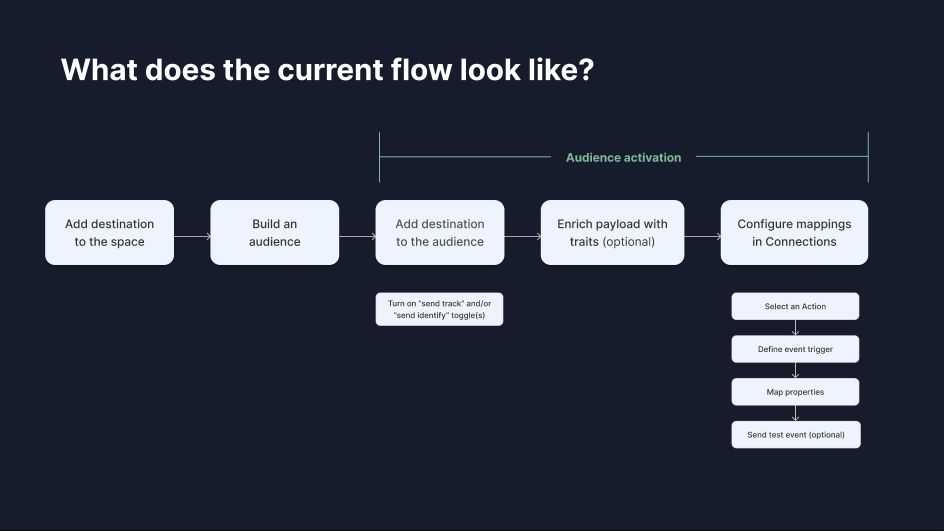
The problem today
Disjointed and redundant set up experience in two places of the app with little guidance
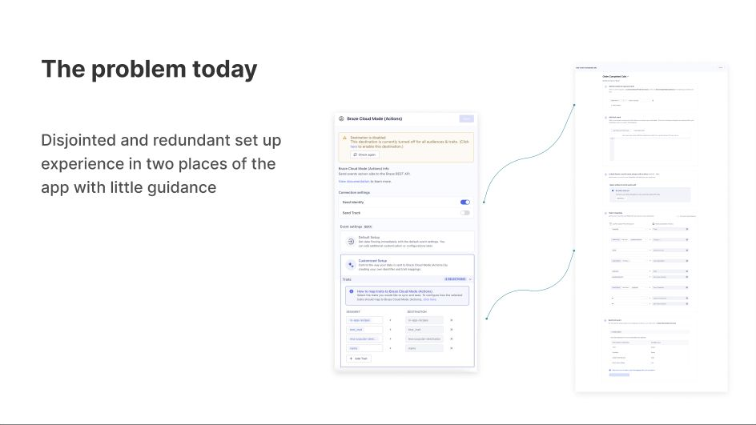
Pain points
Mismatch with user expectation. The current UI reflects how our backend works
Disconnected system results in redundant setup
Destination tools
Segment Connections pipeline
Audience data
Destination tools
Audience data
Configuration
Configuration
Configuration
Actual UI and backend:
User’s expectation:
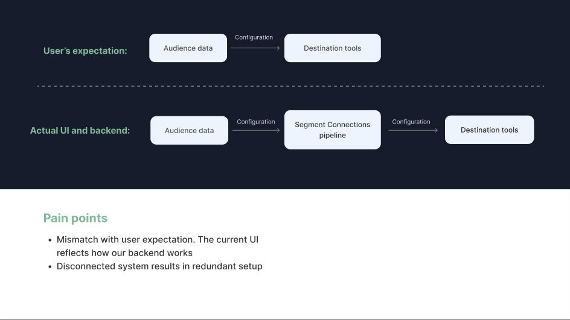
Success metrics
North star metrics : Reduce time-to-value from adding a destination to audience to “audience data to volume” by 25%. The current median time is ~70 hours across all destinations.
Analyze the differences between linked and classic audience
Classic audiences use profile traits only, while linked audiences combine profile traits and entity data from the warehouse.
Both require enrichment and field mapping, although some destinations have presets that skip mapping. Classic audiences use audience entered and exited events; linked audiences also include entity added and removed events.
The backend mapping relationship differs: many classic audiences can share a mapping, while linked audiences have a one-to-one relationship with a mapping.
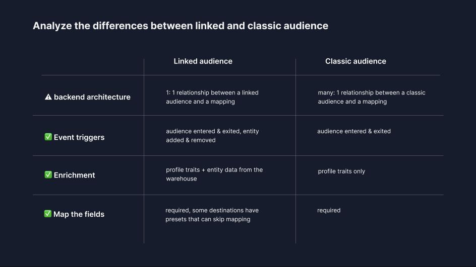
Target users
Primary persona: Technical marketers who build the audiences in Segment and want to activate them in downstream destination tools for personalized campaigns
Target Users
Design concept
A full-page wizard flow that guides users through the series of steps to activate their audience
Concept testing feedback
We present the mocks to a few solution engineers and Segment marketing team.
Creating the mapping in Salesforce mapping settings is a pain in the ass. I have to go to mapping settings and configure event type is identify, audience key etc. This flow replaces that, right? The fact that it inherited it’s great. -Aaron Cates, Principal advisory architect@ Twilio
I think it’s straightforward and makes a lot of sense for my side. The redundancy comes in when we have to do the same things a bunch of times. I love it, can I can it? -Esteban Gonzalez Corti, Customer success- Product technical lead @Twilio
The wizard format was well received by all participants. They all felt the new design provides a more streamline and intuitive set up experience.
The general step of event enrichment, selecting action, and configuring mapping makes sense and aligns with user’s workflow
Concept testing feedback
Layout preference
Option 2: enrichment and mapping on one page
Option 1: enrichment and mapping as two steps
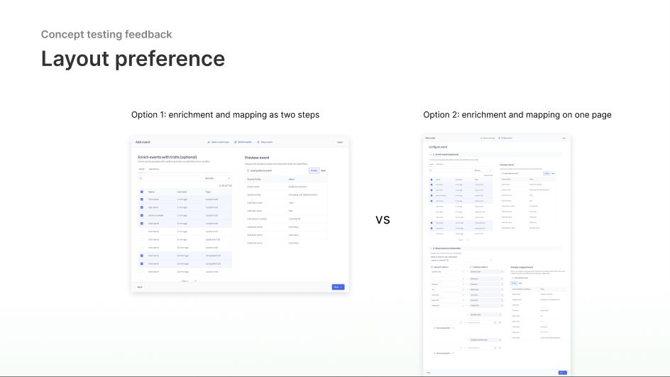
Concept testing feedback
Layout preference
✅ Option 2: enrichment and mapping on one page
Most participants prefer to configure enrichment and mapping on the same page, as it usually requires back and forth configuration. They prefer to come back and edit them in one location.
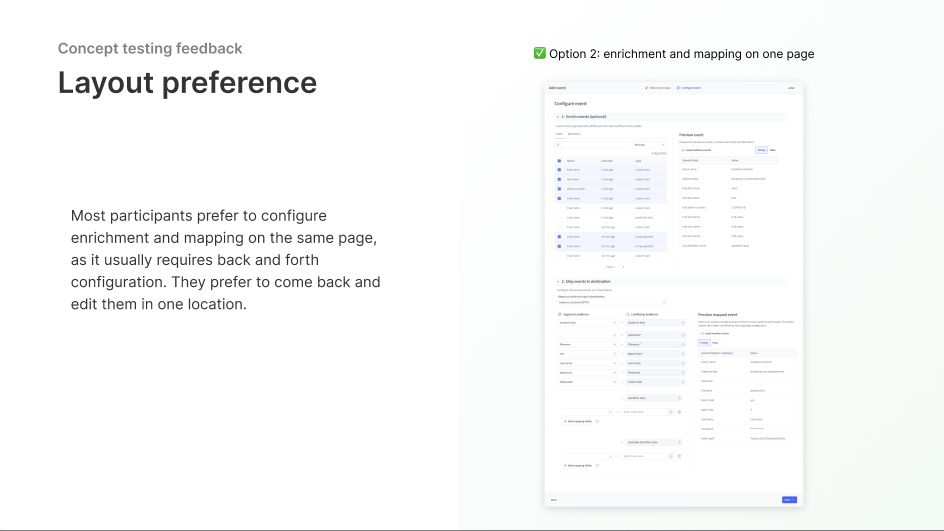
Concept testing feedback
Pain point
Participants struggled to make a selection on Track vs Identity call on this page. They don’t understand the difference and its implication to the downstream destination tools.
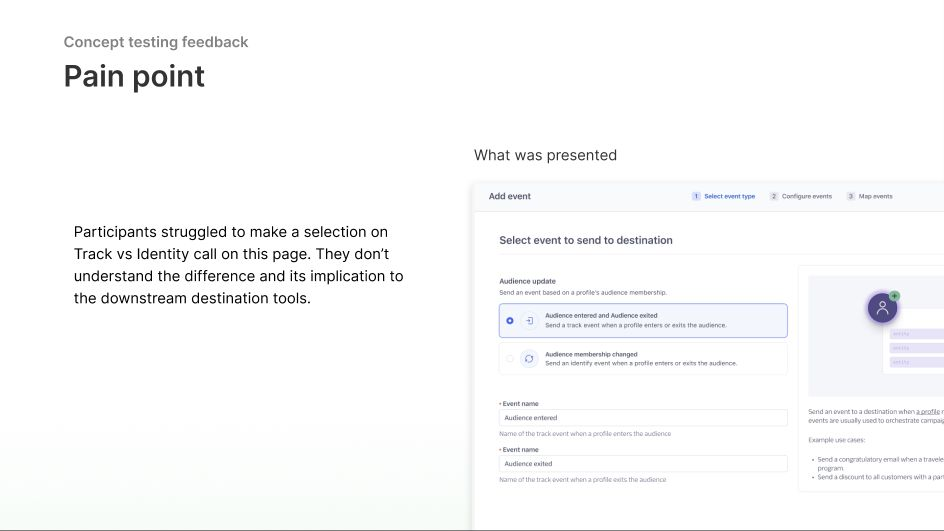
Concept testing feedback
Key findings
Users rely on the name and descriptions of the Action to inform them whether to select Track or Identify calls, since the terminology we used (e.g. “Update user profile” for Braze) aligns with the terminology in the downstream destination tools. After some digging, we found that most Actions are built with a default trigger that defines the call types.
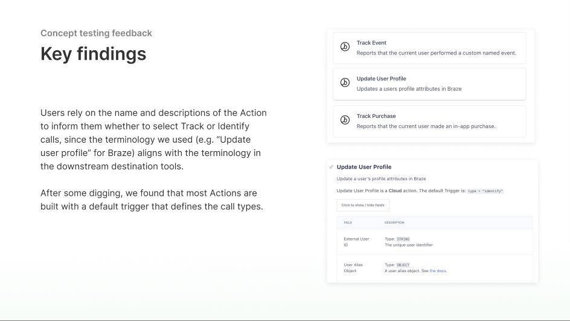
After
Design iteration
Major changes:
R emove “track” or Identity” call selection as the first step
Leverage the default trigger of the Actions to infer Track or Identity call
Put event enrichment and mapping configuration on the same page
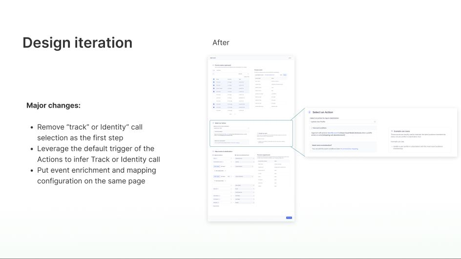
Usability testing
Given the major changes in the flow, we ran usability testings with 5 more external customers
The activation flow in general is intuitive and easy to follow. Pre-filling event trigger/call type based on Action selected aligns with user’s workflow
Traditional marketers are often not the roles activating audiences to destinations. Technical users love seeing raw payload.
Previewing events is not enough. Sending an test event is a must have. Would like the ability to edit user id in the test event.
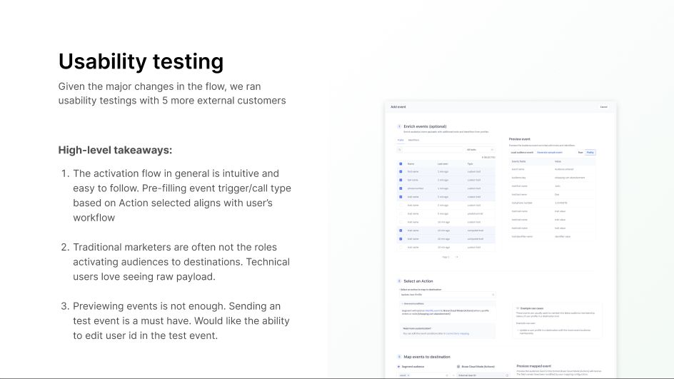
Usability testing findings
Targeted persona
We always assume Engage product is for marketers. However, from the interviews we found that:
Currently, audience activation is too technical for markers to setup. They usually build the audience and pass it off to data engineer for activation.
Sometimes, the data engineers set up the first audience to destination configuration, and the marketers just copy/reuse the setup.
Usability testing findings
Targeted persona
The debate: should we build for data engineers or should we enable marketers self serviceability?
Marketers are the expert in the downstream destinations tools. Their technical level also varies depends on the destination tools they are using. Some destinations like SFMC requires a higher technical level.
Lack of RBAC in Segment further prevent marketer self serviceability
Usability testing findings
Targeted persona
Immediate design principle: Meeting our customers where they are in the product. Design for data engineers or technical marketers due to the technical nature of the flow Long term: Marketers expressed the desire for less dependency on their data team. Our product is not there yet. More foundational research is needed to better understand the marketer persona, RBAC requirements, and the gaps for marketer self-serviceability.
Usability testing findings
Design iteration
Add send test event features, with the ability to edit user id
Default to showing raw payload for event preview
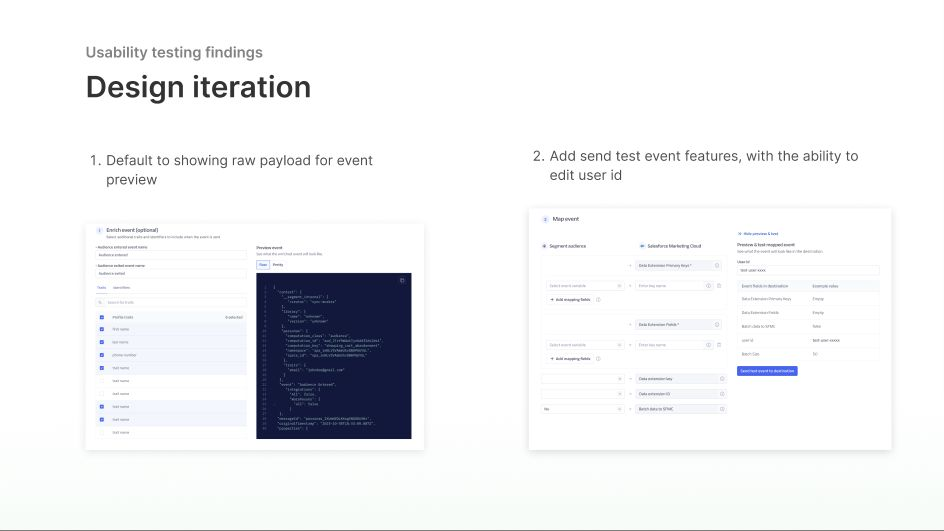
Cross-team review feedback
Feedback 1: Linked audience engineering team would like us to further unify the UX across linked audience and classic audience. Being able to reuse the UI components will greatly reduce engineering time Feedback 2: Audience compute engineering team expressed concern with removing “connect destination” step from the audience creation flow
Addressing feedback #1
Design collaboration
Closely collaborated with linked audience designer to do an end-to-end teardown of features and UI components across linked and classic audience
Weighed the benefits of bespoke UI vs unified UI component and make collaborative decisions. Clearly document the alignment and discrepancy across the two products with rationales
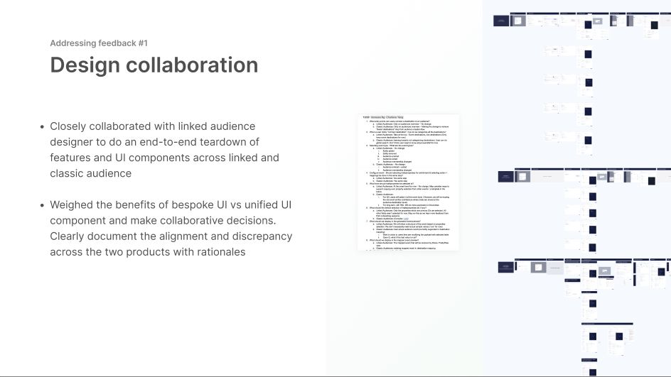
Addressing feedback #1
Design collaboration
Design change: Switch the order to “selecting an Action” and “enrich the event, since adhering to this order is a hard requirement for linked audience
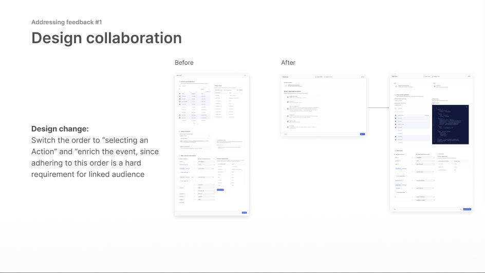
Addressing feedback #2
Cross-team alignment
Situation: I proposed removing the “connect to destination” step from the audience creation flow, since audience activation has its own flow, and if we keep the “connect to destination” step, it is redundant and gives user the false impression that their task if completed. Audience compute team shared concern that with the current logic, this will increase the cost of audience compute.
My approach:
Find out the reasoning behind the concerns and brainstorm with engineers on possible ways to mitigate the risks
Propose a few options get the team’s input on each
Cross team alignment
Result: The team unanimously agree with my proposal. The output was a unified and streamline UX with a small eng lift on the backend to change the compute logic with no risk. The eng task was committed on audience compute team’s backlog for Q1.
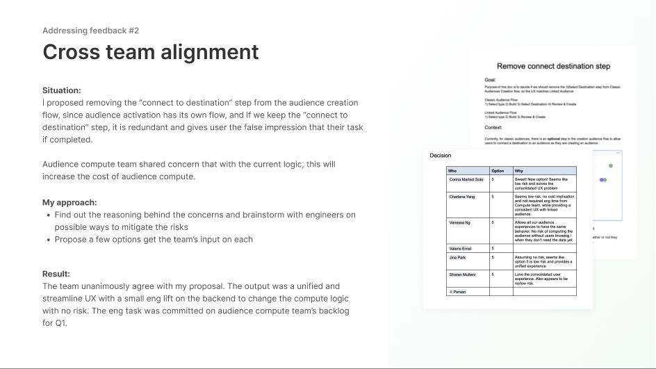
Final design demo
Explore the final audience activation flow in the interactive prototype.
Open the final design demo ↗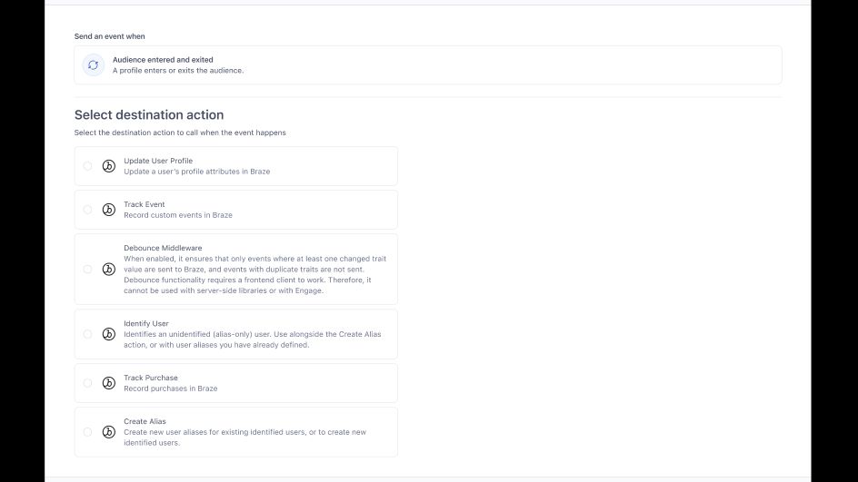